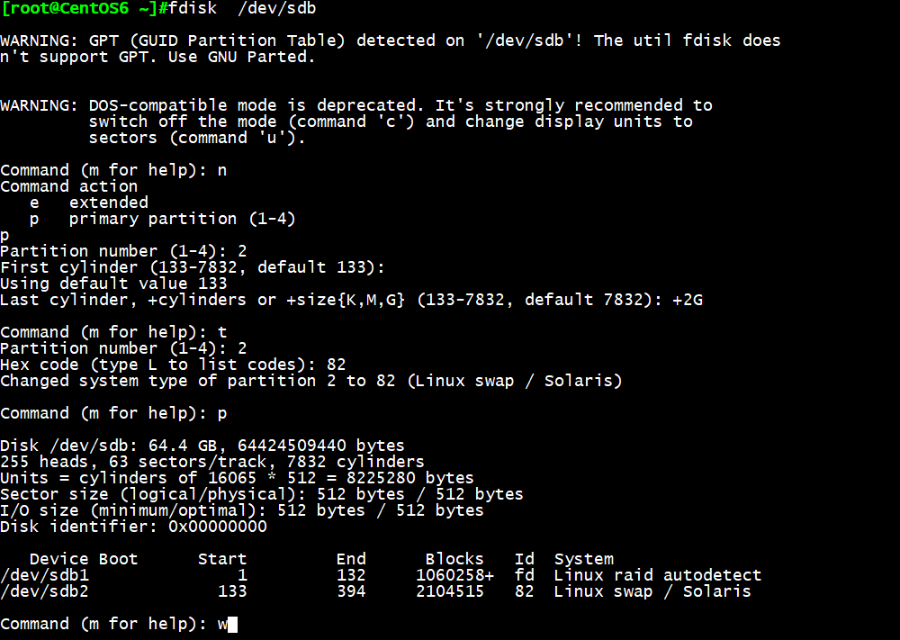
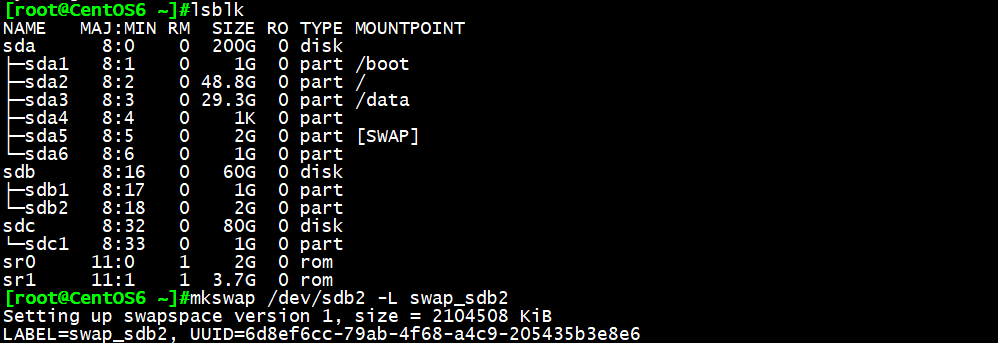
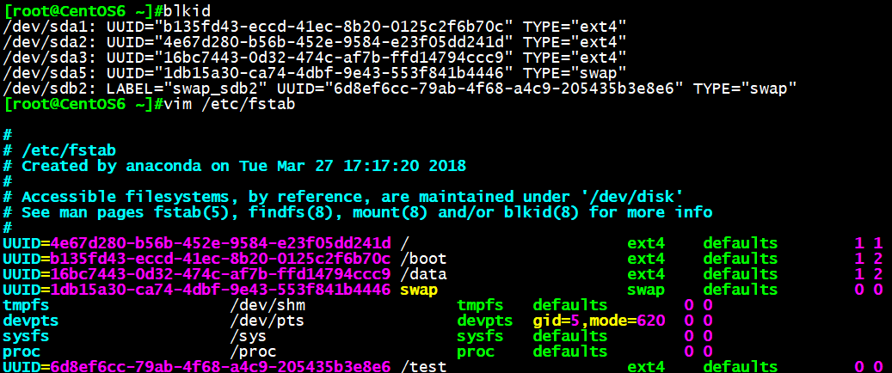

一、交换分区swap管理：
交换分区是系统RAM的补充，相当于Windows系统中的虚拟内存，当系统RAM不够用的时候将使用交换分区来代替内存使用。
基本设置包括：
- 创建交换分区或者文件
- 使用mkswap写入特殊签名
- 在/etc/fstab文件中添加适当的条目
- 使用swapon -a激活交换分区
swapon 启用交换分区
格式：swapon [OPTION]…[DEVICE]
1 | -a 激活所有交换分区 |
swapoff [OPTION]…[DEVICE] 禁用指定交换分区
swap的优先级
可以指定swap分区0到32767的优先级，值越大优先级越高
系统默认会给没有指定的swap指定一个优先级，从-1开始，每加入一个新的没有指定优先级的swap，会给这个优先级减一。先添加的swap的缺省优先级比较高，除非用户自己指定一个优先级，而用户指定的优先级(是正数)永远高于核心缺省指定的优先级(是负数)
优化性能：分布存放，高性能磁盘存放
场景1：增加一个新的swap分区
fdisk /dev/sdb 创建新的swap分区，tyep=82=Linux swap
注：如果文件系统分区没有同步成功，需我们手动同步分区
CentOS5,7版本：partx -a /dev/sdb
CentOS7版本： partprobe /dev/sdb

- mkswap /dev/sdb1 -L swap_sdb2 添加swap文件系统

vim /etc/fstab
1
UUID=xxx swap swap defaults 0 0

- swapon -a 使swap分区生效

- swapon -s 查看是否生效

场景2：使用一个文件当做新的swap分区
1 | 1. dd if=/dev/zero of=/swapfile bs=1024M count=2 创建一个2G文件 |
二、Linux系统光盘使用
光盘在Linux图形环境下将自动挂载
否则就必须手动进行挂
挂载命令： mount /dev/cdrom /mnt/
ejetc命令卸载或弹出光盘
创建ISO文件
1 | cp -a /dev/cdrom /root/centos7.iso |
刻录光盘
wodim -v -eject centos.iso
mkisofs -r -o /root/etc.iso /etc
这种制作光盘方法可作为yum源，但不可做启动光盘
centos官网https://wiki.centos.org 可搜索mkdvdiso.sh脚本
即可引导又可当yum源
三、Linux系统USB介质使用
查看USB设备是否识别
lsusb
被内核探测为SCSI设备
/dev/sdaX、/dev/sdbX、或类似的设备文件
在图形环境中自动挂载
图标在[计算机]窗口中创建
挂载在/run/media/
手动挂载
mount /dev/sdb1 /mnt
四、强大的dd工具
dd命令：convert and copy a file
用法：
1 | dd if=/PATH/FROM/SRC of=/PATH/TO/DEST |
转换参数:
1 | ascii 转换 EBCDIC 为 ASCII |
备份MBR：
1 | dd if=/dev/sda of=/tmp/mbr.bak bs=512 count=1 |
破坏MBR中的bootloader：
1 | dd if=/dev/zero of=/dev/sda bs=64 count=1 seek=446 |
有一个大与2K的二进制文件fileA。现在想从第64个字节位置开始读取，需要读取的大小是128Byts。
又有fileB, 想把上面读取到的128Bytes写到第32个字节开始的位置，替换128Bytes，实现如下：
1 | dd if=fileA of=fileB bs=1 count=128 skip=63 seek=31 conv=notrunc |
备份：
1 | dd if=/dev/sdx of=/dev/sdy 将本地的/dev/sdx整盘备份到/dev/sdy |
恢复：
1 | dd if=/path/to/image of=/dev/sdx 将备份文件恢复到指定盘 |
拷贝内存资料到硬盘
1 | dd if=/dev/mem of=/root/mem.bin bs=1024 将内存里的数据拷贝到root目录下的mem.bin文件 |
从光盘拷贝iso镜像
1 | dd if=/dev/cdrom of=/root/cd.iso 拷贝光盘数据到root文件夹下，并保存为cd.iso文件 |
销毁磁盘数据，文件系统
1 | dd if=/dev/urandom of=/dev/sda1 |
利用随机的数据填充硬盘，在某些必要的场合可以用来销毁数据，执行此操作以后，/dev/sda1将无法挂载，
创建和拷贝操作无法执行。
得到最恰当的block size
1 | dd if=/dev/zero bs=1024 count=1000000 of=/root/1Gb.file |
通过比较dd指令输出中命令的执行时间，即可确定系统最佳的block size大小
测试硬盘写速度
1 | dd if=/dev/zero of=/root/1Gb.file bs=1024 count=1000000 |
测试硬盘读速度
1 | dd if=/root/1Gb.file bs=64k | dd of=/dev/null |
修复硬盘
1 | dd if=/dev/sda of=/dev/sda |
当硬盘较长时间（比如1,2年）放置不使用后，磁盘上会产生消磁点。当磁头读
到这些区域时会遇到困难，并可能导致I/O错误。当这种情况影响到硬盘的第一
个扇区时，可能导致硬盘报废。上边的命令有可能使这些数据起死回生,且这个
过程是安全高效的